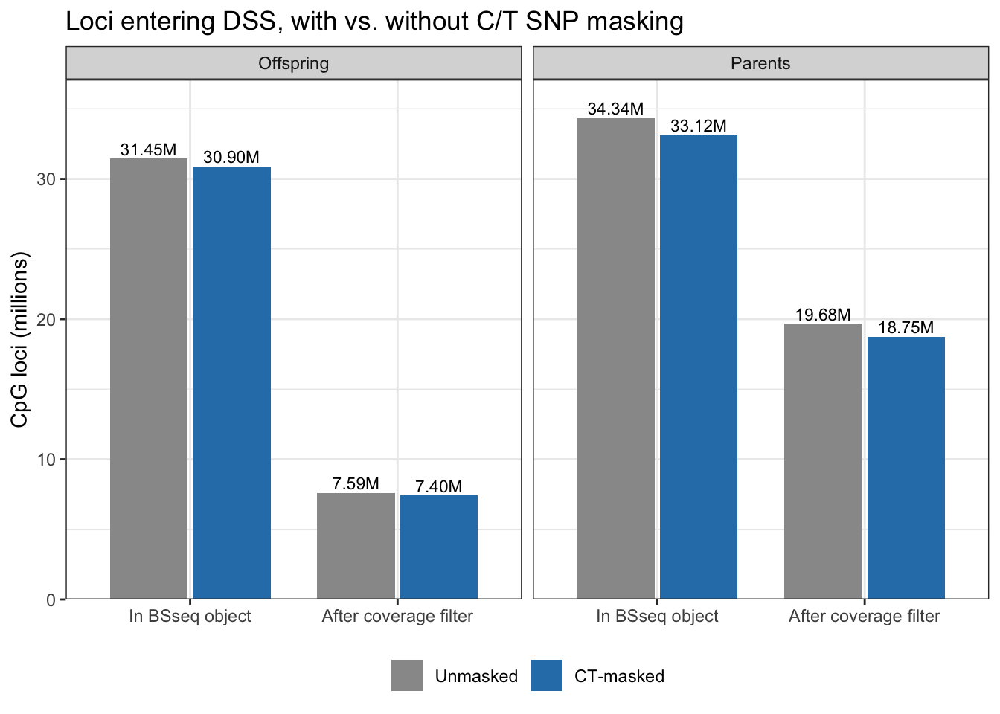
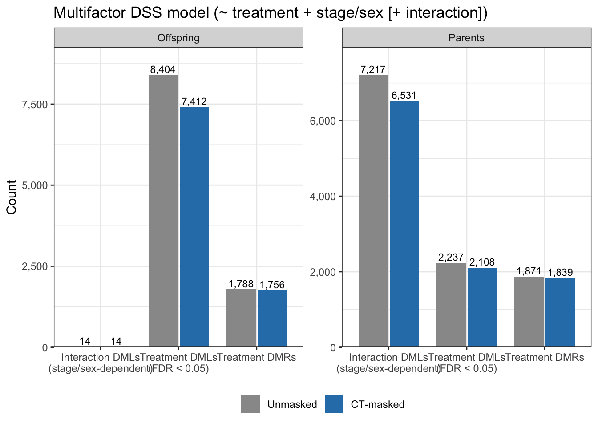
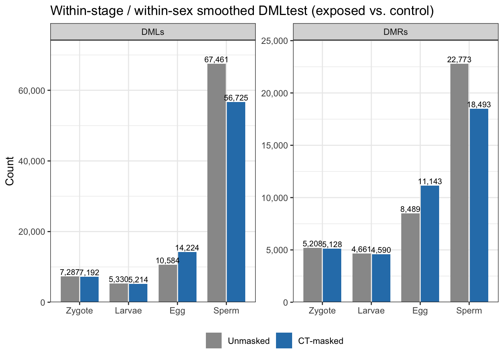
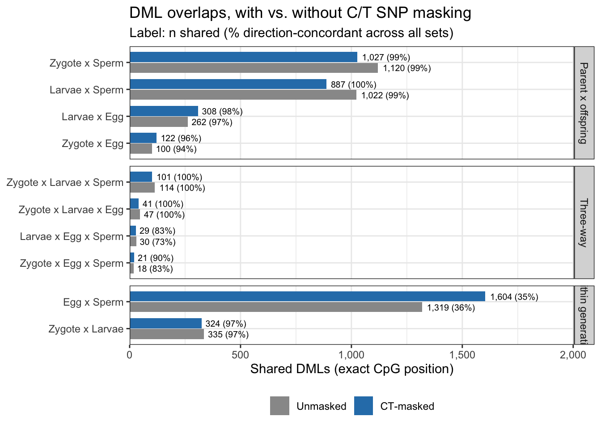

Code
# Load packages
library(dplyr)
Attaching package: 'dplyr'The following objects are masked from 'package:stats':
filter, lagThe following objects are masked from 'package:base':
intersect, setdiff, setequal, unionCode
library(readr)
library(stringr)
library(tidyr)
library(purrr)
library(ggplot2)
# Run from ceasmallr/code/
code_dir <- "../../../../ceasmallr/code"
out_dir <- "../../../../ceasmallr/output"
runs <- tribble(
~dataset, ~masking, ~md, ~out,
"Offspring", "Unmasked", "10-diff-methyl-DSS_remsamples.md", "10-diff-methyl-DSS_remsamples",
"Offspring", "CT-masked", "10.01-diff-methyl-DSS-CTmask.md", "10.01-diff-methyl-DSS-CTmask",
"Parents", "Unmasked", "10.1-diff-methyl-DSS-parents.md", "10.1-diff-methyl-DSS-parents",
"Parents", "CT-masked", "10.11-diff-methyl-DSS-parents-CTmask.md", "10.11-diff-methyl-DSS-parents-CTmask"
) %>%
mutate(masking = factor(masking, levels = c("Unmasked", "CT-masked")))
mask_cols <- c("Unmasked" = "grey60", "CT-masked" = "#2C7FB8")
# ---- helpers ----------------------------------------------------------------
# Pull the first number from a knitted-output line ("## ...") matching `pattern`
md_num <- function(md_file, pattern) {
lines <- read_lines(file.path(code_dir, md_file))
hit <- str_match(lines, paste0("^\\s*##\\s+", pattern))[, 2]
hit <- hit[!is.na(hit)]
if (length(hit) == 0) return(NA_real_)
as.numeric(hit[1])
}
# Count rows in a BED (empty file -> 0)
bed_n <- function(path) {
if (!file.exists(path) || file.size(path) == 0) return(0L)
length(read_lines(path))
}
read_dml <- function(path, diff_name) {
read_tsv(path, col_names = c("chr", "start", "end", diff_name), col_types = "ciid")
}
# ---- 1. Run-level summary values --------------------------------------------
run_summary <- runs %>%
mutate(
loci_bsseq = map_dbl(md, md_num, "(\\d+) methylation loci"),
loci_retained = map_dbl(md, md_num, "Loci retained after coverage filter: (\\d+)"),
mf_trt_DML = map_dbl(md, md_num, "Treatment DMLs \\(FDR < 0\\.05\\): (\\d+)"),
mf_intx_DML = map_dbl(md, md_num, "Loci with (?:stage|sex)-dependent treatment effect \\(FDR < 0\\.05\\): (\\d+)"),
mf_trt_DMR = map_dbl(out, ~ bed_n(file.path(out_dir, .x, "treatment_DMR.bed")))
)
# ---- Plot 1: loci in BSseq object / retained after filter -------------------
p_loci <- run_summary %>%
select(dataset, masking, loci_bsseq, loci_retained) %>%
pivot_longer(c(loci_bsseq, loci_retained), names_to = "stage", values_to = "n") %>%
mutate(stage = recode(stage, loci_bsseq = "In BSseq object",
loci_retained = "After coverage filter"),
stage = factor(stage, levels = c("In BSseq object", "After coverage filter"))) %>%
ggplot(aes(stage, n / 1e6, fill = masking)) +
geom_col(position = position_dodge(0.8), width = 0.75) +
geom_text(aes(label = sprintf("%.2fM", n / 1e6)),
position = position_dodge(0.8), vjust = -0.3, size = 3) +
facet_wrap(~ dataset) +
scale_fill_manual(values = mask_cols) +
scale_y_continuous(expand = expansion(mult = c(0, 0.08))) +
labs(x = NULL, y = "CpG loci (millions)", fill = NULL,
title = "Loci entering DSS, with vs. without C/T SNP masking") +
theme_bw() + theme(legend.position = "bottom")
p_loci
Code
# ---- Plot 2: multifactor results --------------------------------------------
p_mf <- run_summary %>%
select(dataset, masking, mf_trt_DML, mf_intx_DML, mf_trt_DMR) %>%
pivot_longer(starts_with("mf_"), names_to = "result", values_to = "n") %>%
mutate(result = recode(result,
mf_trt_DML = "Treatment DMLs\n(FDR < 0.05)",
mf_intx_DML = "Interaction DMLs\n(stage/sex-dependent)",
mf_trt_DMR = "Treatment DMRs")) %>%
ggplot(aes(result, n, fill = masking)) +
geom_col(position = position_dodge(0.8), width = 0.75) +
geom_text(aes(label = scales::comma(n)),
position = position_dodge(0.8), vjust = -0.3, size = 3) +
facet_wrap(~ dataset, scales = "free_y") +
scale_fill_manual(values = mask_cols) +
scale_y_continuous(labels = scales::comma, expand = expansion(mult = c(0, 0.1))) +
labs(x = NULL, y = "Count", fill = NULL,
title = "Multifactor DSS model (~ treatment + stage/sex [+ interaction])") +
theme_bw() + theme(legend.position = "bottom")
p_mf
Code
# ---- Plot 3: within-stage / within-sex smoothed tests -----------------------
group_files <- tribble(
~dataset, ~group, ~prefix,
"Offspring", "Zygote", "zygote",
"Offspring", "Larvae", "larvae",
"Parents", "Egg", "female",
"Parents", "Sperm", "male"
)
group_counts <- runs %>%
select(dataset, masking, out) %>%
inner_join(group_files, by = "dataset", relationship = "many-to-many") %>%
mutate(DMLs = map2_int(out, prefix, ~ bed_n(file.path(out_dir, .x, paste0(.y, "_DML.bed")))),
DMRs = map2_int(out, prefix, ~ bed_n(file.path(out_dir, .x, paste0(.y, "_DMR.bed"))))) %>%
select(dataset, masking, group, DMLs, DMRs)
p_group <- group_counts %>%
pivot_longer(c(DMLs, DMRs), names_to = "type", values_to = "n") %>%
mutate(group = factor(group, levels = c("Zygote", "Larvae", "Egg", "Sperm"))) %>%
ggplot(aes(group, n, fill = masking)) +
geom_col(position = position_dodge(0.8), width = 0.75) +
geom_text(aes(label = scales::comma(n)),
position = position_dodge(0.8), vjust = -0.3, size = 2.8) +
facet_wrap(~ type, scales = "free_y") +
scale_fill_manual(values = mask_cols) +
scale_y_continuous(labels = scales::comma, expand = expansion(mult = c(0, 0.1))) +
labs(x = NULL, y = "Count", fill = NULL,
title = "Within-stage / within-sex smoothed DMLtest (exposed vs. control)") +
theme_bw() + theme(legend.position = "bottom")
p_group
Code
# ---- Plot 4: parent-offspring (and within-generation) DML overlaps ----------
# Recomputed from the DML BEDs so both versions use matching inputs:
# Unmasked = 10-diff-methyl-DSS_remsamples offspring x 10.1 parents
# CT-masked = 10.01 offspring x 10.11 parents
load_dmls <- function(off_out, par_out) {
list(
zyg = read_dml(file.path(out_dir, off_out, "zygote_DML.bed"), "zyg_diff"),
lar = read_dml(file.path(out_dir, off_out, "larvae_DML.bed"), "lar_diff"),
egg = read_dml(file.path(out_dir, par_out, "female_DML.bed"), "egg_diff"),
sperm = read_dml(file.path(out_dir, par_out, "male_DML.bed"), "sperm_diff")
)
}
by_loc <- c("chr", "start", "end")
# every 2- and 3-way combination of DML sets; concordant = all diffs share one sign
overlap_stats <- function(d) {
combs <- unlist(lapply(2:3, function(k) combn(names(d), k, simplify = FALSE)), recursive = FALSE)
map_dfr(combs, function(cmb) {
j <- reduce(d[cmb], inner_join, by = by_loc)
s <- sign(as.matrix(j[, paste0(cmb, "_diff"), drop = FALSE]))
tibble(comparison = paste(cmb, collapse = " x "),
n_sets = length(cmb),
n_shared = nrow(j),
n_concordant = sum(apply(s, 1, function(r) length(unique(r)) == 1)))
})
}
overlaps <- bind_rows(
overlap_stats(load_dmls("10-diff-methyl-DSS_remsamples", "10.1-diff-methyl-DSS-parents")) %>%
mutate(masking = "Unmasked"),
overlap_stats(load_dmls("10.01-diff-methyl-DSS-CTmask", "10.11-diff-methyl-DSS-parents-CTmask")) %>%
mutate(masking = "CT-masked")
) %>%
mutate(masking = factor(masking, levels = c("Unmasked", "CT-masked")),
pct_concordant = 100 * n_concordant / n_shared,
type = case_when(comparison %in% c("zyg x lar", "egg x sperm") ~ "Within generation",
n_sets == 2 ~ "Parent x offspring",
TRUE ~ "Three-way"),
comparison = str_replace_all(comparison, c("zyg" = "Zygote", "lar" = "Larvae",
"egg" = "Egg", "sperm" = "Sperm")))
p_overlap <- overlaps %>%
mutate(type = factor(type, levels = c("Parent x offspring", "Three-way", "Within generation"))) %>%
ggplot(aes(reorder(comparison, n_shared), n_shared, fill = masking)) +
geom_col(position = position_dodge(0.8), width = 0.75) +
geom_text(aes(label = sprintf("%s (%.0f%%)", scales::comma(n_shared), pct_concordant)),
position = position_dodge(0.8), hjust = -0.1, size = 2.6) +
coord_flip() +
facet_grid(type ~ ., scales = "free_y", space = "free_y") +
scale_fill_manual(values = mask_cols) +
scale_y_continuous(labels = scales::comma, expand = expansion(mult = c(0, 0.25))) +
labs(x = NULL, y = "Shared DMLs (exact CpG position)", fill = NULL,
title = "DML overlaps, with vs. without C/T SNP masking",
subtitle = "Label: n shared (% direction-concordant across all sets)") +
theme_bw() + theme(legend.position = "bottom")
p_overlap
Code
# ---- Combined table of percent change ---------------------------------------
pct_change <- bind_rows(
run_summary %>%
select(dataset, masking, loci_bsseq, loci_retained, mf_trt_DML, mf_intx_DML, mf_trt_DMR) %>%
pivot_longer(-c(dataset, masking), names_to = "metric", values_to = "n"),
group_counts %>%
pivot_longer(c(DMLs, DMRs), names_to = "type", values_to = "n") %>%
transmute(dataset, masking, metric = paste(group, type), n),
overlaps %>% transmute(dataset = "Overlap", masking, metric = comparison, n = n_shared)
) %>%
pivot_wider(names_from = masking, values_from = n) %>%
mutate(pct_change = 100 * (`CT-masked` - Unmasked) / Unmasked)
knitr::kable(pct_change, digits = 1, format.args = list(big.mark = ","))| dataset | metric | Unmasked | CT-masked | pct_change |
|---|---|---|---|---|
| Offspring | loci_bsseq | 31,450,950 | 30,896,191 | -1.8 |
| Offspring | loci_retained | 7,594,836 | 7,403,330 | -2.5 |
| Offspring | mf_trt_DML | 8,404 | 7,412 | -11.8 |
| Offspring | mf_intx_DML | 14 | 14 | 0.0 |
| Offspring | mf_trt_DMR | 1,788 | 1,756 | -1.8 |
| Parents | loci_bsseq | 34,343,214 | 33,122,286 | -3.6 |
| Parents | loci_retained | 19,684,036 | 18,747,029 | -4.8 |
| Parents | mf_trt_DML | 2,237 | 2,108 | -5.8 |
| Parents | mf_intx_DML | 7,217 | 6,531 | -9.5 |
| Parents | mf_trt_DMR | 1,871 | 1,839 | -1.7 |
| Offspring | Zygote DMLs | 7,287 | 7,192 | -1.3 |
| Offspring | Zygote DMRs | 5,208 | 5,128 | -1.5 |
| Offspring | Larvae DMLs | 5,330 | 5,214 | -2.2 |
| Offspring | Larvae DMRs | 4,661 | 4,590 | -1.5 |
| Parents | Egg DMLs | 10,584 | 14,224 | 34.4 |
| Parents | Egg DMRs | 8,489 | 11,143 | 31.3 |
| Parents | Sperm DMLs | 67,461 | 56,725 | -15.9 |
| Parents | Sperm DMRs | 22,773 | 18,493 | -18.8 |
| Overlap | Zygote x Larvae | 335 | 324 | -3.3 |
| Overlap | Zygote x Egg | 100 | 122 | 22.0 |
| Overlap | Zygote x Sperm | 1,120 | 1,027 | -8.3 |
| Overlap | Larvae x Egg | 262 | 308 | 17.6 |
| Overlap | Larvae x Sperm | 1,022 | 887 | -13.2 |
| Overlap | Egg x Sperm | 1,319 | 1,604 | 21.6 |
| Overlap | Zygote x Larvae x Egg | 47 | 41 | -12.8 |
| Overlap | Zygote x Larvae x Sperm | 114 | 101 | -11.4 |
| Overlap | Zygote x Egg x Sperm | 18 | 21 | 16.7 |
| Overlap | Larvae x Egg x Sperm | 30 | 29 | -3.3 |